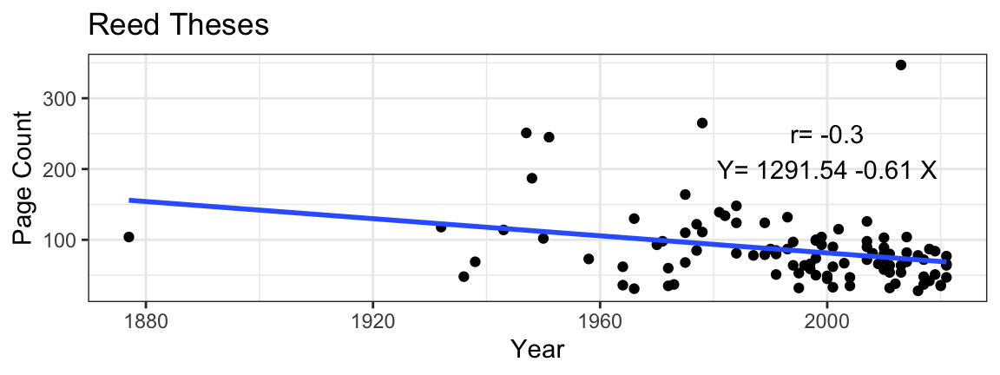
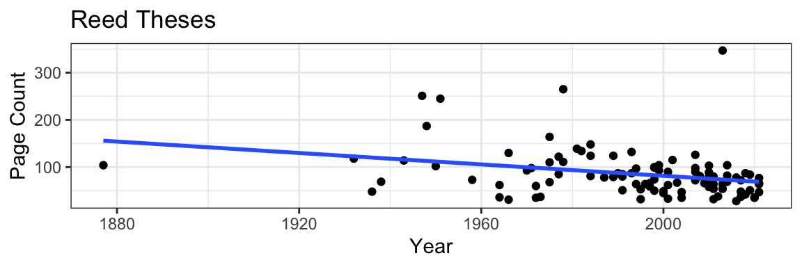
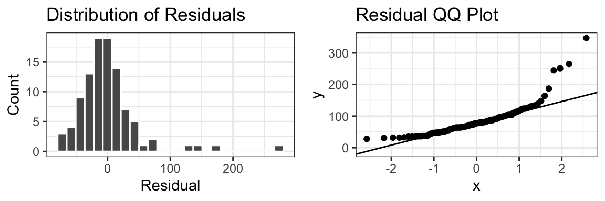
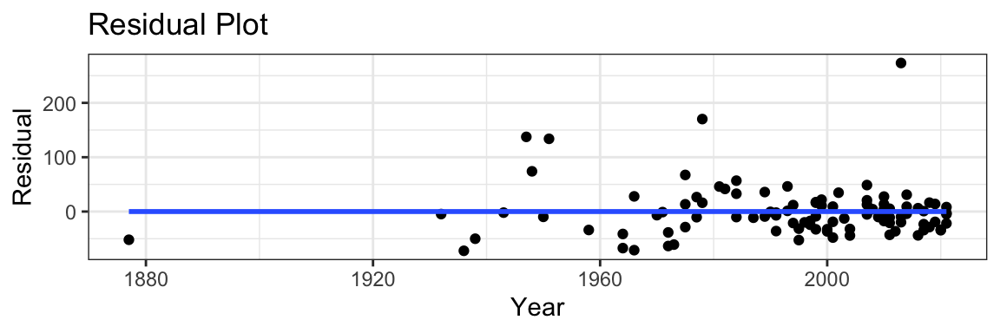
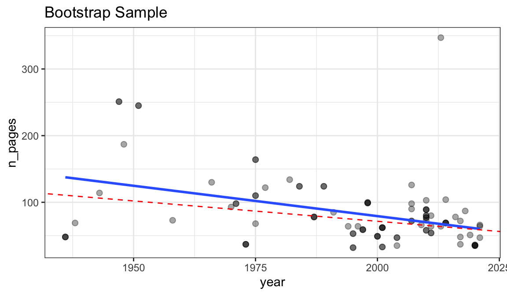
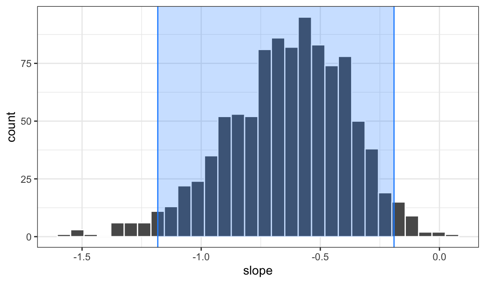

[1] 1.306952[1] 0.06284903
Inference for Regression I
Megan Ayers
Stat 141 | Fall 2026
Monday, Week 13
Announcement:
Answers from last lecture’s activity
Discuss theoretical inference for simple linear regression (SLR)
Discuss inference with bootstrap for linear models
Suppose you’re interested in comparing average home price between Seattle and Portland
With Neighbor(s): Choose a question below and work through it on the board.
Confidence Intervals
Find a 80% confidence interval for the difference in average home price.
Are we 80% confident there’s actually a difference?
Hypothesis Testing
You’ve heard there’s no difference between Seattle and Portland!
Test your claim using a hypothesis test (with a significance level of \(\alpha = 0.01\)).
With independent samples of size \(n_1>30\), \(n_2>30\), we can use the t-distribution approximation method.
\[ \begin{align*} (\bar{x}_1-\bar{x}_2) \pm t^*\times \sqrt{\frac{s_1^2}{n_1}+\frac{s_2^2}{n_2}} &= (.95-.70) \pm 1.307 \times 0.06285\\ & = (0.1679, \ 0.3321) \end{align*} \]
Thus, at the 80% confidence level, we think there is a difference in average home price between Seattle and Portland.
Hypotheses: \(H_0: \mu_1 -\mu_2 = 0 \quad H_a: \mu_1-\mu_2 \neq 0\)
Assess Conditions (on previous slide)
Compute test statistic under \(H_0\) \[t = \frac{(\bar{x}_1 - \bar{x}_{2})-(\mu_1-\mu_{2})}{\sqrt{\frac{s_1^2}{n_1}+\frac{s_2^2}{n_2}}} = \frac{(.95-.70)-(0)}{\sqrt{\frac{0.15^2}{50} + \frac{0.35^2}{35} }} = 3.978 \]
We’ve used linear models to analyze the relationship between two quantitative variables
\[ y = \beta_0 + \beta_1 x + \epsilon \]
Performing least squares regression gives us our best guess at this model by providing estimates \(\widehat{\beta}_1\) and \(\widehat{\beta}_2\) based on our sample data:
\[ \widehat{y} = \widehat{\beta}_0 + \widehat{\beta}_1 x \]
get_regression_table()We can fit a linear model to any data set we want, but if we just have a sample of data, any trend we detect doesn’t necessarily demonstrate that the trend exists in the population.
Goal of Inference: Use statistics calculated from data to make inferences about parameters
Parameters: \(\beta_0\) (intercept) and \(\beta_1\) (slope)
\[ y = \beta_0 + \beta_1 x + \epsilon \]
We won’t ever know the true values of these parameters. So we estimate them based on a least squares model in the sample:
\[ \widehat{y} = \widehat{\beta}_0 + \widehat{\beta}_1 x \]
Statistics: \(\widehat{\beta}_0\) (intercept) and \(\widehat{\beta}_1\) (slope)

We assume that in the population, there is the following relationship between Page Count (\(y\)) and Year (\(x\))
\[ \underbrace{\text{Page Count}}_{y} = \beta_0 + \beta_1 \underbrace{\text{Year}}_{x} + \underbrace{\epsilon}_{\text{error}} \]
Hypothesis Tests
Null Hypothesis: Year (\(x\)) and Page Count (\(y\)) are uncorrelated
Alternative Hypothesis: Page Count and Year are correlated
Q: What do these hypotheses translate to in mathematical symbols and parameters?
\[H_0: \beta_1 = 0 \qquad H_a: \beta_1 \neq 0\]
Confidence intervals - Can I make a 95% confidence interval for \(\beta_1\)?
We’ll use the least squares sample model to conduct these inference tasks:
\[ \widehat{y} = \widehat{\beta}_0 + \widehat{\beta}_1 x = 1291.54 - 0.61 x \]
Today, we will:
\[\text{Population Model: } y = \beta_0 + \beta_1 x + \epsilon\]
\[\text{Sample Model: } \widehat{y} = \widehat{\beta}_0 + \widehat{\beta}_1 X \]
\[H_0: \beta_1 = 0 \qquad H_a: \beta_1 \neq 0\]
Under the LINE conditions (we’ll check these soon), \(\widehat{\beta}_1\) is:
\[ \color{red}{SE(\widehat{\beta}_1) = \sqrt{\frac{1}{n-2} \frac{\sum_{i =1}^n (y_i - (\beta_0 + \beta_1 x_i) )^2}{\sum_{i=1}^n (x_i - \bar x)^2}}} \] (Don’t memorize this!)
\[H_0: \beta_1 = 0 \qquad H_a: \beta_1 \neq 0\]
Under the LINE conditions, \(\widehat{\beta}_1\) is:
Approximately normally distributed
has mean \(\beta_1\)
Has a standard error of:
\[ SE(\widehat{\beta}_1) = \sqrt{\frac{1}{n-2} \frac{\sum_{i =1}^n (y_i - (\beta_0 + \beta_1 x_i) )^2}{\sum_{i=1}^n (x_i - \bar x)^2}} \]
In practice, we estimate \(\beta_0, \beta_1\) in the formula using \(\widehat{\beta}_0, \widehat{\beta}_1\), giving \(\widehat{SE} (\widehat{\beta}_1)\)
We perform a hypothesis test of \(H_0: \beta_1 = 0\) using the standardized t-statistic
\[ \text{t-statistic} = \frac{\textrm{sample stat}- \textrm{null value}}{\widehat{SE} (\widehat{\beta}_1)} = \frac{\widehat{\beta}_1 - 0}{\widehat{SE} (\widehat{\beta}_1)} \]
The \(t\)-statistic follows a \(t\)-distribution with \(n-2\) degrees of freedom.
We can use the pt() function to calculate the corresponding p-value
We create a confidence interval for \(\beta_1\) using
\[ \textrm{sample stat} \pm \underbrace{t^*}_{\text{critical value}} \cdot \widehat{SE} (\widehat{\beta}_1) \quad = \quad \color{red}{\widehat{\beta}_1 \pm t^* \cdot \widehat{SE} (\widehat{\beta}_1)} \]
We use the critical values from a \(t\)-distribution with \(n-2\) degrees of freedom!
lm() and get_regression_table() functions in R.lm()# A tibble: 2 × 7
term estimate std_error statistic p_value lower_ci upper_ci
<chr> <dbl> <dbl> <dbl> <dbl> <dbl> <dbl>
1 intercept 1292. 394. 3.28 0.001 509. 2074.
2 year -0.605 0.198 -3.06 0.003 -0.998 -0.212Hypothesis Test
std_error — theory-based standard error (0.198)
statistic — \(t\)-statistic (-3.057)
p_value — p-value (0.003) of observing our \(t\)-statistic or something more extreme in the t-distribution with \(df=n-2\) for the two-sided test, \[H_0: \beta_1 = 0 \qquad H_a: \beta_1 \neq 0\]
lm()# A tibble: 2 × 7
term estimate std_error statistic p_value lower_ci upper_ci
<chr> <dbl> <dbl> <dbl> <dbl> <dbl> <dbl>
1 intercept 1292. 394. 3.28 0.001 509. 2074.
2 year -0.605 0.198 -3.06 0.003 -0.998 -0.212Confidence Interval
By default, the upper and lower bounds are provided for the 95% confidence interval with lower_ci and upper_ci, giving the 95% interval (-0.998, -0.212)
The table also gives similar information for the intercept with:
lm()# A tibble: 2 × 7
term estimate std_error statistic p_value lower_ci upper_ci
<chr> <dbl> <dbl> <dbl> <dbl> <dbl> <dbl>
1 intercept 1292. 394. 3.28 0.001 783. 1800.
2 year -0.605 0.198 -3.06 0.003 -0.86 -0.35General Confidence Interval
conf.level argument to change confidence levelTo do theory-based inference for regression, we require the LINE conditions we talked about way back in week 4!
These make up the LINE Conditions (Linearity, Independence, Normality, Equal Variability)
Linearity: The relationship between explanatory and response variables must be approximately linear

Some potential outliers with high page counts…
But this mostly looks okay!
Independence: The observations should be independent of one another.
Normality of Residuals: The distribution of residuals should be normally distributed

Equal Variability: Variance of residuals should be roughly constant across data set.

Linearity and Independence seem to be reasonably met…
but Normality and Equal Variance do not
When Normality and Equal Variance do not hold, we can use the bootstrap for correct inference!
But we do need the sample size \(n\) to be larger than usual.
You should feel okay about this with a sample size of at least a couple hundred
To approximate variability in the slope statistic \(\widehat{\beta}_1\), we create a bootstrap sample by resampling data rows with replacement, and then calculating a new linear model, with a new slope
# A tibble: 6 × 3
# Groups: replicate [1]
replicate n_pages year
<int> <dbl> <dbl>
1 1 77 2010
2 1 62 2001
3 1 124 1989
4 1 78 2016
5 1 33 2001
6 1 90 2007
Dashed red line: regression line for original sample
Darker points: observations included in bootstrap sample more than once
Now we generate 1000 replicates/bootstrap samples, and compute the slope for each.
Let’s step carefully through this code - we’re combining lm(), get_regression_table(), and our dplyr data wrangling functions.
Now we generate 1000 replicates/bootstrap samples, and compute the slope for each.
We draw 1000 different bootstrap samples of size nrow(theses_samp) (our sample size)
Now we generate 1000 replicates/bootstrap samples, and compute the slope for each.
Then we group by replicate: we want R to do the next calculation within every bootstrap sample
Now we generate 1000 replicates/bootstrap samples, and compute the slope for each.
Across each bootstrap sample, we calculate a single number inside summarize(): the slope estimate (second estimate) from the regression table from lm(n_pages ~ year)
# A tibble: 6 × 2
replicate slope
<int> <dbl>
1 1 -0.527
2 2 -0.689
3 3 -0.426
4 4 -0.549
5 5 -0.216
6 6 -0.472get_regression_table rounds values to 3 digits by default (can change digits)Plotting the bootstrap distribution
We can make the same plot and add the implied 95% confidence interval:

Gathering bootstrap samples…
# A tibble: 6 × 2
replicate slope
<int> <dbl>
1 1 -0.411
2 2 -0.762
3 3 -0.614
4 4 -0.665
5 5 -0.961
6 6 -0.615Percentile confidence interval
\[H_0: \beta_1 = 0 \qquad H_a: \beta_1 \neq 0\]
Even without Normality and Equal Variability of the residuals, the standardized statistic
\[ Z = \frac{\widehat{\beta}_1 - \beta_1}{\text{Bootstrap $\widehat{SE}$}} \]
is approximately standard normal (i.e., mean 0 and SD 1) as \(n\) gets large enough.
pnorm() to get our p-values!
lm() theory-based SE estimates when these assumptions are violated.\[ H_0: \beta_1 = 0 \qquad H_a: \beta_1 \neq 0 \qquad \qquad Z = \frac{\widehat{\beta}_1 - \beta_1}{\text{Bootstrap $\widehat{SE}$}} \]
We reject \(H_0\) at the 0.05 level! (But not at the 0.01 level)